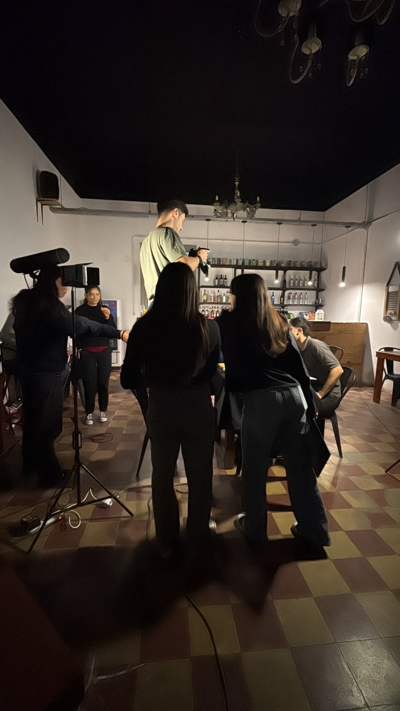

Testimonios de Trabajadores
Claudio Rosa, docente de la UNRC y cineasta cordobés, nos comenta como ve a la posible industria.
"El audiovisual es una industria que genera mucho movimiento de dinero y eso todavía no está comprendido plenamente en Río Cuarto. Los realizadores pueden prepararse en producción, pero se necesita un entorno y un apoyo político-económico adecuado para que la industria se desarrolle."
"Me parece que lo primero es tratar de hacer cosas, tomar más en serio las posibilidades. Y también, realmente debería haber un apoyo político-económico si alguien se interesara desde la Municipalidad o desde asociaciones civiles, porque el audiovisual es una industria que genera mucho movimiento de dinero y eso todavía no está comprendido plenamente, probablemente en Río Cuarto y en la región.En realidad, los realizadores, ¿en qué deben prepararse para gestionar los fondos? Tanto en producción como en toda la narrativa".
"Pero es bastante difícil si no tenés como una especie de 'pata' político-económica de interés. Por ejemplo, costó muchos años, pero en algún momento —primero fue el gobernador Schiaretti, después ciertas políticas, y que hoy Llaryora lo continúa— se volvieron permeables a todas estas cuestiones como la creación del Polo Audiovisual de Córdoba, las cuestiones de fomento, etc. Porque son grandes movilizadores para que después se genere y se desarrolle la industria. Todas las cuestiones industriales de cualquier índole tienen estímulos para que se desarrollen, y esas son las políticas. Entonces, no está muy del lado de los realizadores locales prepararse para eso si no tienen un entorno adecuado".
Además, Claudio nos advierte una de las herramientas mas importantes que deben tener los nuevos realizadores.
"Más que habilidades comunicativas, lo que se necesita es capacidad de gestión. En Río Cuarto hay gente que ha logrado filmar y llevar sus cosas a otra parte; hay gente nacida en Río Cuarto y desarrollada en Córdoba, o gente que estudió en otro lugar, volvió a Río Cuarto y desarrolló cosas. Pero básicamente, no es tanto la habilidad comunicativa, sino la de gestión".
"Obviamente que las habilidades comunicativas como saber hacer un pitching están bien, pero si no tenés sustento para ir a los mercados a hacer esos pitches, tampoco tiene sentido. Me parece que la obra nunca va a quedar aislada si vos tenés capacidad de gestionar que la obra se mueva. Y en realidad, eso también se hace con contactos. Espacios como el Focus en Córdoba o Río Cuarto son mecanismos para ir agilizando esos contactos. Cuando alguien surja con la capacidad de llevar eso a otro nivel y salir, va a gestionar que las cosas se puedan, primero, producir, y después, que se vea lo que se produjo."
Marcos Altamirano, productor local y docente de la UNRC, también dio su visión acerca de la industria.
Sobre qué habilidades son esenciales para los nuevos cineastas: "Primero, mirar muchísimas películas y series, pero sobre todo películas. Más allá de eso, considero fundamental ser responsable, no solamente en el trabajo audiovisual sino en la vida laboral en general. Podemos ser personas muy creativas, pero si no hay responsabilidad, no se llega a ningún lado".
"El mundo del audiovisual conlleva mucho presupuesto y exige pensar en desarrollos de proyectos complejos; por eso necesitamos un alto nivel de compromiso. Para mí, la habilidad más importante es saber gestionar: saber poner en común las herramientas y todos los elementos necesarios para poder llevar adelante un proyecto. La responsabilidad es, sin dudas, el pilar fundamental".
¿Existe suficiente apoyo para la producción cinematográfica independiente en nuestra región?
"La tecnología democratizó la producción, pero el financiamiento público sigue siendo lo que posibilita que el cine regional tenga un circuito real donde mostrarse." afirma Marcos.
Por último agregó: En Argentina hubo un acceso muy fácil a la tecnología y se habló mucho de la "democratización de la producción", pero, en definitiva, el financiamiento público es lo que posibilita que estas películas tengan un circuito donde mostrarse. Cuando hay procesos de reducción de subsidios, todo ese circuito se ve dañado.
De hecho, en Argentina la categoría es difusa: casi todo el cine podría considerarse independiente, o bien nada lo es. ¿Independiente de quién y de qué? Si un proyecto recibe un subsidio del INCAA, técnicamente estamos hablando de una política pública, no de algo puramente independiente.
Si entendemos lo "independiente" como un cine que se mantiene al margen del mercado comercial —como las producciones escolares o las más emergentes—, la realidad es que en nuestro país esta actividad siempre requirió del acompañamiento del Estado, ya sea a través del INCAA o, en nuestro caso provincial, del Polo Audiovisual Córdoba.

